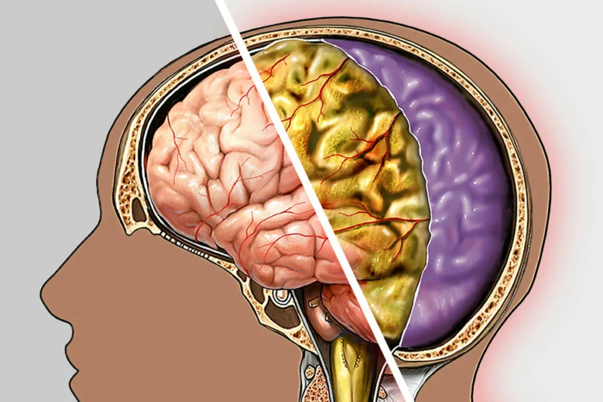

Синдром замкнутости |
|
 | Синдром замкнутости может быть вызван инсультом, травмой, кровоизлиянием, опухолью или инфекцией, поражающей мост мозга. Прогноз для пациентов с синдромом замкнутости зависит от степени повреждения и возможностей реабилитации | Менингит |
|  | Менингит является серьёзным заболеванием, которое требует незамедлительного медицинского вмешательства. Своевременная диагностика и лечение могут спасти жизнь пациента и предотвратить долгосрочные неврологические последствия. Меры профилактики, такие как вакцинация, играют важную роль в снижении риска заболевания. |